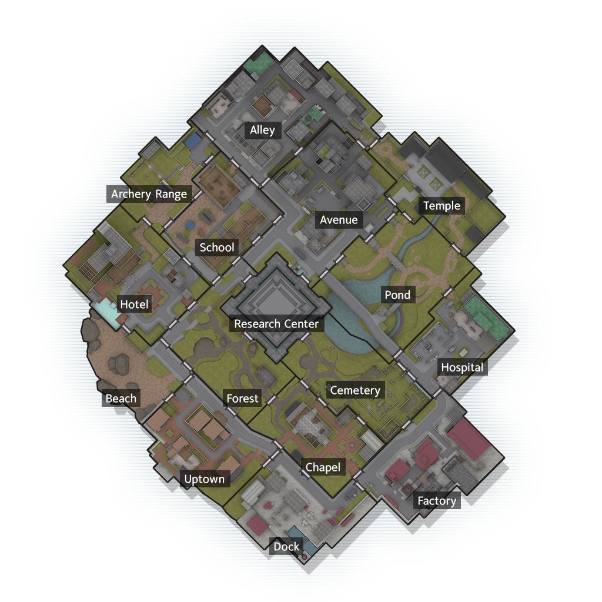

Each player is given a dynamic map every phase that shows objectives, loot boxes, teleporters, zones closing, their particular location, enemies in their zone, any other revealed areas, and anything else.

Lumia Island:
This map is approximately done in 7 day/night phases (approximately 7 real days). If it lasts longer, the remainder of the game is a deathmatch in a single zone with the zone as a red zone. 2 zones close every day except the first day, shown the day before. In addition, entering a closed zone will make you take 25% max HP damage. The research center is automatically closed. There are 15 other zones, including Factory, Cemetery, Chapel, Hospital, Pond, Dock, Uptown, Beach, Forest, Avenue, Temple, Alley, School, and Archery Range. Objectives will always be revealed at where they will spawn a day ahead of time.
Day 1 should start with you with nothing but 2 breads, 2 waters, and a white weapon. Pick a zone to start at. 2 zones will close tomorrow.
Day 2 spawns 1 Meteorite and 1 Tree of Life in 2 random zones. 2 zones will close tomorrow. (13 zones left)
Day 3 spawns 1 Mithril and 1 Tree of Life in 2 random zones. 2 zones will close tomorrow. (11 zones left)
Day 4 spawns 1 Meteorite and 1 Mithril in 2 random zones. 2 zones will close tomorrow. (9 zones left)
Day 5 spawns Wickeline in a random zone. 2 zones will close tomorrow. (7 zones left)
Day 6 has a calm before the storm. 2 zones will close tomorrow. (5 zones left)
Day 7 prepares to close the remaining zones. (3 zones left)
After Day 7, every zone closes.
The estimated game flow is as follows: Builds should be done by day 3 or so (at least 3 or 4 full built items) along with a bit of food and drink. Early game spikes might be at day 2 or earlier in which a fast weapon is built and someone tries to fight then. Mid game is around until after Omega’s spawn, so around day 5 to night 5. Everyone should be contesting for rare resources at this point in some way, and some players might be dead by here. Late game is then the core of the game, where if you play well and have good resources, usually good amounts of food and drink and 3 or more legendary items, this is where you can usually close out the game by playing around Wickeline and zone closing.
Specific zone information:
Dock:
2 Chickens
1 Bear
Pond:
2 Bats
1 Boar
1 Bear
Beach:
2 Bats
1 Boar
2 Bear
Uptown:
2 Chicken
2 Wild Dogs
1 Bear
Alley:
2 Chicken
1 Wild Dog
2 Wolves
1 Bear
Hotel:
2 Chicken
1 Wild Dog
2 Wolves
Avenue:
2 Chicken
2 Boars
Hospital:
2 Chicken
1 Wild Dog
2 Wolves
Temple:
2 Bats
1 Boar
1 Bear
Archery Range:
2 Bats
1 Boar
2 Wolves
Cemetery:
2 Bats
1 Boar
2 Wolves
Forest:
2 Bats
1 Boar
2 Wolves
Factory:
2 Chicken
1 Wild Dog
2 Wolves
Chapel:
2 Chicken
1 Bat
1 Boar
School:
3 Chicken
2 Wild Dog